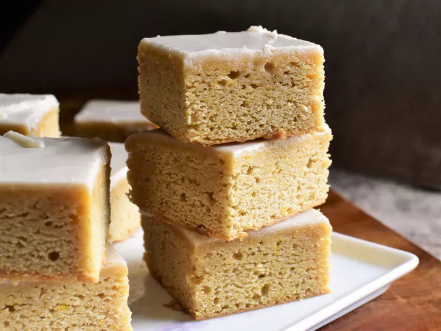

Maple Blondies

Quick dessert that will satisfy any maple-lover's craving.
These maple blondies are a quick dessert that will satisfy any maple-lover's craving.
You can underbake them slightly for a denser, chewier bar; or bake them until fully
set for a cake-style bar.
Ingredients
- 1/2 cup unsalted butter, melted and cooled
- 1/2 cup pure maple syrup
- 1/4 cup firmly packed dark brown sugar
- 1 large egg, at room temperature
- 1 teaspoon maple extract
- 1 teaspoon vanilla extract
- 1 1/4 cups all-purpose flour
- 1/2 teaspoon baking soda
- 1/2 teaspoon salt
- 1/8 teaspoon ground cinnamon
- 1/8 teaspoon ground nutmeg
Steps
- Preheat the oven to 350 degrees F (175 degrees C). Line an 8x8-inch square pan with
enough parchment paper to have overhang on all sides.
- In a large bowl, whisk together melted butter, 1/2 cup maple syrup, brown sugar, egg,
1 teaspoon maple extract, and vanilla extract until thoroughly combined. Add in flour,
baking soda, 1/2 teaspoon salt, cinnamon, and nutmeg, and mix until combined.
- Pour batter into prepared pan and smooth into an even layer. Bake until bars feel just set,
15 to 20 minutes. Remove to cool on a wire rack for about 15 minutes.
- Meanwhile, make the glaze. Whisk together confectioner's sugar, 2 tablespoons maple syrup,
heavy cream, 3/4 teaspoon maple extract, and 1/8 teaspoon salt until smooth.
- After bars have cooled for 15 minutes, pour glaze evenly over bars. Allow glaze to set,
and bars to cool completely. Cut into 16 bars.
Return Home